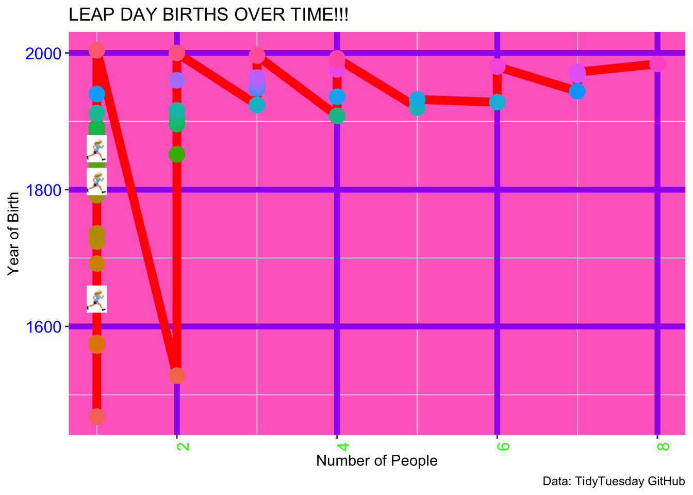
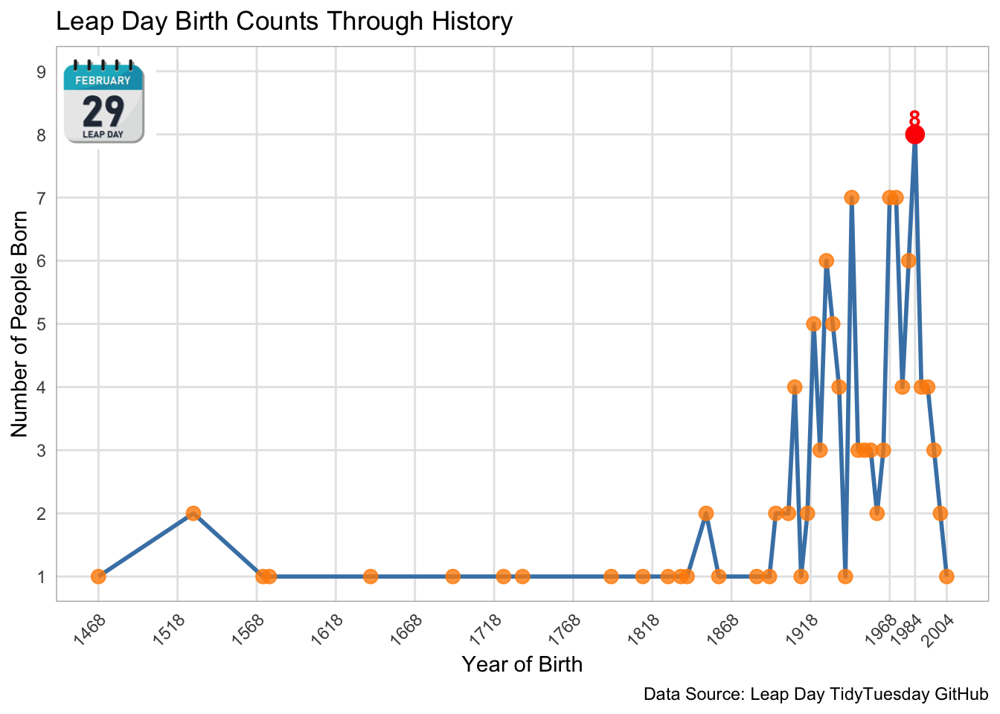

library(tidyverse) #loads a bunch of data-science packages
library(knitr) #lets you run code chunks in Quarto and R Markdown
library(here) #to save my plot
library(ggimage) #To add in images to my plotBad plot and Good plot
Introduction
This document is for my homework for week 8’s bad plot and good plot. I decided to use Leap Day dataset from a past Tidy Tuesdays. This dataset is available here. The dataset includes:
year_birth - Birth year of the person
person – name of the person
description - of who they are
year_death - year of their death
Load Libraries
These are the libraries I needed for this homework assignment.
Read in data
This data is from Leap Day dataset from a past Tidy Tuesdays and the data came from the February 29 article on Wikipedia.
February 29 is a leap day (or “leap year day”), an intercalary date added periodically to create leap years in the Julian and Gregorian calendars.
births <- readr::read_csv('https://raw.githubusercontent.com/rfordatascience/tidytuesday/main/data/2024/2024-02-27/births.csv') #Load in the data - I decided to only do the births data not the deaths tooData Dictionary
births.csv
| variable | class | description |
|---|---|---|
| year_birth | integer | Year in which this person was born |
| person | character | Name of the person |
| description | character | Short description of the person |
| year_death | integer | Year of death |
Look at the data
This was to get an idea of what was in the data.
glimpse(births) #look at the structure, types and first few rows of the data tableRows: 121
Columns: 4
$ year_birth <dbl> 1468, 1528, 1528, 1572, 1576, 1640, 1692, 1724, 1736, 1792…
$ person <chr> "Pope Paul III", "Albert V", "Domingo Báñez", "Edward Ceci…
$ description <chr> NA, "Duke of Bavaria", "Spanish theologian", "1st Viscount…
$ year_death <dbl> 1549, 1579, 1604, 1638, 1614, 1704, 1763, 1822, 1784, 1868…Data Analysis
Need to make a summary table with number of births each year
# Creating a summary table of number of births per year
births_count <- births %>% #new dataset name
group_by(year_birth) %>% #grouping data by the variable - year_birth
summarise(Number_of_births= n()) %>% #summary table with one row per year
arrange(year_birth) %>% #sorts table in ascending order by birth year
rename(Birth_year= year_birth) %>% #Changing the column name to Birth_year
select(Birth_year, Number_of_births) #Keep only these columns
births_count #View the summary table# A tibble: 44 × 2
Birth_year Number_of_births
<dbl> <int>
1 1468 1
2 1528 2
3 1572 1
4 1576 1
5 1640 1
6 1692 1
7 1724 1
8 1736 1
9 1792 1
10 1812 1
# ℹ 34 more rowsBad Plot
This code below is to create my bad plot first
#Adding new column to summary table for image and assign image to specific rows
births_count$image <- NA # new column with all NAs
births_count$image[c(5,10,15)] <- here("Good_plot_Bad_plot", "Data", "leaper.png") # assign image to rows 5, 10, 15
#Image of person leaping is random, makes plot more cluttered and distracts from the data
#Bad plot code
bad_plot <- ggplot(births_count, #Making bad plot first
aes(x = Number_of_births, y = Birth_year)) + #this is what I want for the x and y axis
#Time should usually be on the x-axis
geom_line(linewidth = 3, color = "red") + # thick red line inbetween data points
#Makes it hard to see a trend or indidvual data points
geom_point(aes(color = factor(Birth_year)), size = 5, alpha = 1) + #data points are colored by year
#makes the plot confusing and there is no legend to help you figure out which color equals what year
geom_image(aes(image = image), size = 0.05) + #adds image to some points
#only some points have the image, which makes it confusing
theme(panel.background = element_rect(fill = "#FF6EC7"), #background color bright pink
#Hard on the eyes
panel.grid.major = element_line(color = "purple", linewidth = 2), #adds thick purple grid lines
#which makes it look kidish bc of the pink and purple and also hard to look at
axis.text.x = element_text(angle = 90, #puts the x axis label at 90 degree angle
#Hard to read
hjust = 1, #right aligns text, putting to right of axis tick
#making it more confusing
color = "green", #text color green
#making it hard to read on the pink background
size = 12), #large text size
#making it distracting
axis.text.y = element_text(color = "blue", size = 12)) + #y axis title blue and not the same as the x axis making it hard for the brain to look at
labs(title = "LEAP DAY BIRTHS OVER TIME!!!", #Title of the graph
#all caps and many exclamation marks is too much
x = "Number of People", #title of the x-axis
y = "Year of Birth", #title of the y-axis
caption = "Data: TidyTuesday GitHub") + #Added caption to tell you where the data is from but the info given won't help you find it
guides(color = "none") # removes the legend
#thus making more confusing
#Saving my plot
ggsave(here("Good_plot_Bad_plot","Output","Badplot.pdf"), plot = bad_plot, width = 8, height = 6) #saving my plot to the output folder
print(bad_plot) #viewing plot
Good Plot
Now this code is for my good plot
# Identify year with maximum number of births
max_births <- births_count %>% #new data frame
filter(Number_of_births == max(Number_of_births)) # keep only rows with max births
# New data frame for the calendar image on where to put it
calendar_image <- data.frame( #new data frame
x = min(births_count$Birth_year) + 5, # X-coordinate is slightly right of left edge of plot
y = 8.5, #y-coordinate is under title
image = here("Good_plot_Bad_plot", "Data", "calendar_photo_leap_year.png") # calling the image
)
# Good plot
good_plot <- ggplot(births_count, aes(x = Birth_year, y = Number_of_births)) + #x-axis has the year bc it is a timeline plot
geom_line(size = 1, color = "steelblue") + #line in between data points
geom_point(alpha = 0.8, color = "darkorange", size = 3) + #Data points color
#Complementary colors and good for colorblind people
geom_point(data = max_births, aes(x = Birth_year, y = Number_of_births), #Maximum birth point
color = "red", size = 4) + #Put the dot in red to stand out
geom_text(data = max_births,
aes(x = Birth_year, y = Number_of_births, label = Number_of_births), #Where the text goes
vjust = -0.5, #Puts it just above the point making it easy to read
color = "red", fontface = "bold", size = 4) + #Making label stand out
geom_image(data = calendar_image, aes(x = x, y = y, image = image), size = 0.18) + #Add calendar image in the coordinates set before
labs( #Clear labels and titles for the graph
title = "Leap Day Birth Counts Through History",
x = "Year of Birth",
y = "Number of People Born",
caption = "Data Source: Leap Day TidyTuesday GitHub" #Where to find the data
) +
theme_minimal() +
theme( #
panel.grid.major = element_line(color = "grey90"), #Makes grid lines light grey
#easy to see
panel.grid.minor = element_blank(), #No minor grid lines
#Makes it cleaner
axis.text.x = element_text(angle = 45, hjust = 1), #Changing x-axis text
#Helps fit more labels
panel.border = element_rect(color = "grey70", fill = NA) #Adds a border around the plot
) +
scale_x_continuous( #Scale for the x axis
breaks = sort(c(seq(min(births_count$Birth_year), 2000, by = 50), #Adds earliest birth year then up by 50 years each line
1984, #Adds 1984 year cause that year had the maximum births
2004)), #Adds 2004 which is the last year with data
limits = c(min(births_count$Birth_year), 2004) #Limits of the x-axis
) +
scale_y_continuous(limits = c(1, 9), breaks = 1:9) #Scale for the y axis
# Has enough space for the image at the top
ggsave(here("Good_plot_Bad_plot","Output","Goodplot.pdf"), plot = good_plot, width = 8, height = 6) #save plot
print(good_plot)
Summary of good plot:
The plot shows the number of Leap Day births over time. The maximum value of births is highlighted with a red dot and labeled, making it easy to identify that the peak occurred in 1984 with 8 births.